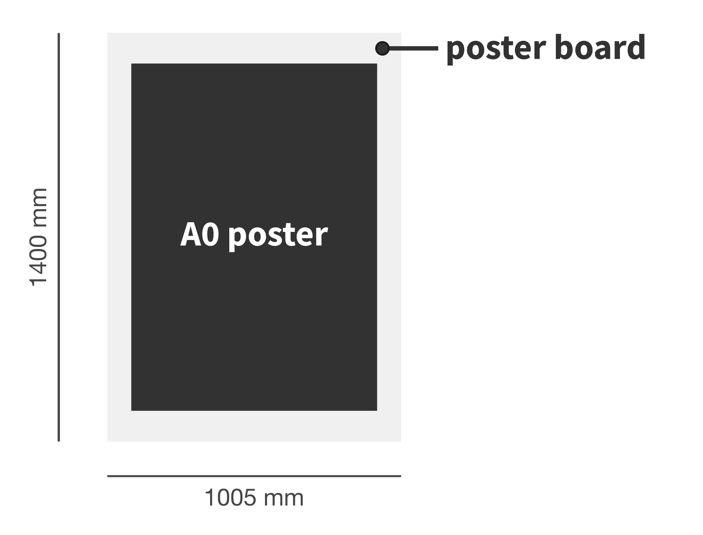

The call for contributions is closed.
All oral contributions that are not accepted for the plenary session will be given the opportunity to be automatically converted into a poster contribution.

Proceedings for Cool Stars 19 will be entirely electronic. Submission will be handled using Zenodo, an EU funded data and project repository, and then indexed on the ADS. All submissions are assigned a Digital Object Identifier (DOI) number through Zenodo, making contributions citeable, before indexing to ADS to make contributions discoverable. Submission to the arXiv in parallel with submission to the conference proceedings is encouraged. Each contribution will be edited for language and, to a lesser degree, content. Please typeset your proceeding contribution using the Cool Stars 19 LaTeX document class.** Since proceedings are only electronic, there are no page limits.
** Under construction and will be made available as soon as possible.